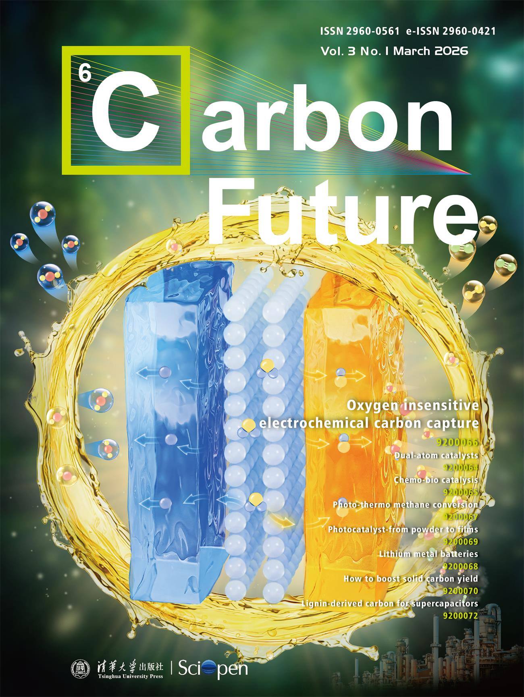
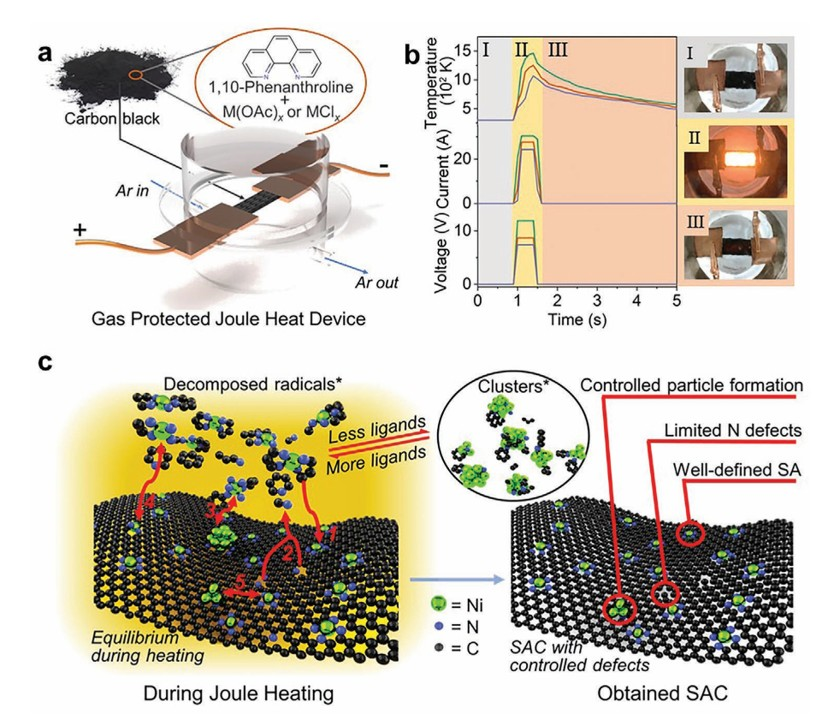

TOC / briefing
assets/images/toc-co2-bpm.jpg
Publications

2026
2025
TOC / briefing
assets/images/toc-h2o2.jpg
Electrifying industrial hydrogen peroxide production via soft interfacial molecular mediation
Introduces aqueous–nonaqueous interfacial proton-coupled electron transfer as a safe, modular route to electrified H₂O₂ production.
TOC / briefing
assets/images/toc-acid-base.jpg
Electrochemical acid–base generators for decoupled carbon management
Membrane-programmed H⁺/OH⁻ transport produces >1 M acid/base at high current efficiency for carbon management.
2024
TOC / briefing
assets/images/toc-flow-battery.jpg
Mild pH-decoupling aqueous flow battery with practical pH recovery
Demonstrates high-voltage aqueous flow batteries using mild pH asymmetry and practical pH recovery.
TOC / briefing
assets/images/toc-single-membrane.jpg
Single-membrane pH-decoupling aqueous batteries using proton-coupled electrochemistry for pH recovery
Simplifies pH-decoupled aqueous battery architectures using proton-coupled electrochemistry for pH recovery.
TOC / briefing
assets/images/toc-hydrogen-storage.jpg
Electrochemical hydrogen storage under ambient conditions in aqueous-soluble organics
Explores reversible electrochemical hydrogen storage using aqueous-soluble organic molecules under ambient conditions.
TOC / briefing
assets/images/toc-insitu.jpg
In situ techniques for aqueous quinone-mediated electrochemical carbon capture and release
In-situ methods for studying quinone-mediated electrochemical carbon capture and release.
2023
TOC / briefing
assets/images/toc-anthraquinone.jpg
An Extremely Stable and Soluble NH₂-Substituted Anthraquinone Electrolyte for Aqueous Redox Flow Batteries
Reports a stable, soluble anthraquinone electrolyte for aqueous organic redox flow batteries.
TOC / briefing
assets/images/toc-phenazine.jpg
A phenazine-based high-capacity and high-stability electrochemical CO₂ capture cell with coupled electricity storage
Couples electrochemical CO₂ capture with electricity storage using phenazine chemistry.
TOC / briefing
assets/images/toc-methane.jpg
Light-driven flow synthesis of acetic acid from methane with chemical looping
Flow synthesis strategy for methane-to-acetic-acid conversion through chemical looping.
TOC / briefing
assets/images/toc-bicarbonate.jpg
A carbon-efficient bicarbonate electrolyzer
Bicarbonate electrolysis design emphasizing carbon efficiency.
TOC / briefing
assets/images/toc-em.jpg
Tunable Impedance of Cobalt Loaded Carbon for Wide-Range Electromagnetic Wave Absorption
Cobalt-loaded carbon materials with tunable impedance for electromagnetic wave absorption.
< 2022
